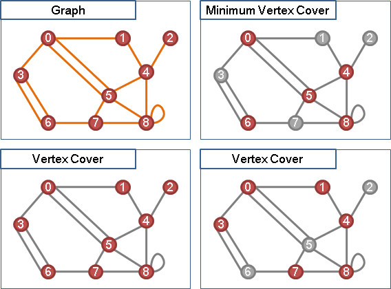

Vertex Cover
程度★★ 難度★★
Vertex Cover
一張無向圖上，挑選數個點，碰觸到所有邊，這些點就叫做一個「點覆蓋」，可能有許多種。換句話說，每一條邊，都會碰觸到一個以上的選定點。
點覆蓋，就像是紙鎮，壓住了所有邊，讓邊不會被吹走。
點覆蓋，一個點集合，這些點會是圖上每一條邊，其中一端或兩端的端點。
Minimum Vertex Cover (NP-complete) 一張圖上點數最少的Vertex Cover。 Minimum Vertex Cover in Tree (P) 當給定的圖是樹，得利用Greedy演算法，從樹葉往樹根方向選出節點。 Minimum Vertex Cover in Bipartite Graph (P) 當給定的圖是二分圖，得化作Maximum Cardinality Bipartite Matching解決。
UVa 10243 10859 10984 11419 11095
Minimum Vertex Cover in Tree
由樹葉往樹根方向開始選出Vertex Cover的點，如果一個節點與其父節點都沒有選中，也就表示他們之間的邊沒有被覆蓋到，也就表示必須要從兩點中選出一點作為Vertex Cover的點，而選擇父節點一定是比較好的。時間複雜度等同於一次Graph Traversal的時間。
一、利用DFS找出preorder，並且建立DFS tree。 二、以preorder的逆序開始選出Vertex Cover的點。
一、利用BFS找出levelorder，並且建立BFS tree。 二、以levelorder的逆序開始選出Vertex Cover的點。
Minimum Vertex Cover in Bipartite Graph: König's theorem

二分圖，Maximum Cardinality Matching的邊數，等於Minimum Vertex Cover的點數。證明過程如下：
令一張二分圖，有一最大匹配M，其邊數為|M|。 甲、最小點覆蓋至少要|M|點： 最大匹配的這|M|條匹配邊，不會有同樣的端點。 也就是說，使用|M|點，就能涵蓋最大匹配的這|M|條匹配邊。 更進一步，至少使用|M|點以上，才能覆蓋圖上所有邊。 乙、最小點覆蓋至多有|M|點： 找到最大匹配後，二分圖上任一條路徑僅有一端是未匹配邊。 請參考Berge's Theorem。 以X側的未匹配點為樹根，建立交錯樹，並且把所有交錯樹融合在一起： http://en.wikipedia.org/wiki/File:Koenigs-theorem-proof.svg 由未匹配點開始的一條路徑，選取所有奇數距離的點， 即可覆蓋該條路徑的未匹配邊與已匹配邊。 Y側也是一樣的道理。 選取之點，都是匹配邊上其中一端的端點。 匹配邊僅有|M|條，故最多只會用到|M|點。 由甲乙可知最小點覆蓋的點數，不多不少，等於|M|點。
)window.location='http://en.wikipedia.org/wiki/File:Koenigs-theorem-proof.svg'){kind=link}
Minimum Vertex Cover in Bipartite Graph
找完最大二分匹配後，有三種情況要分別處理：
甲、X側未匹配點的交錯樹們。
乙、Y側未匹配點的交錯樹們。
丙、層層疊疊的交錯環們（包含單獨的匹配邊）。
這三個情況互不干涉。用Graph Traversal建立甲、乙的交錯樹們，剩下部分就是丙。
要找點覆蓋，甲、乙是取盡奇數距離的點，丙是取盡偶數距離的點、或者是取盡奇數距離的點，每塊連通分量可以各自為政。另外，小心處理的話，是可以印出字典順序最小的點覆蓋的。
已經有最大匹配時，求點覆蓋的時間複雜度等同於一次Graph Traversal的時間。